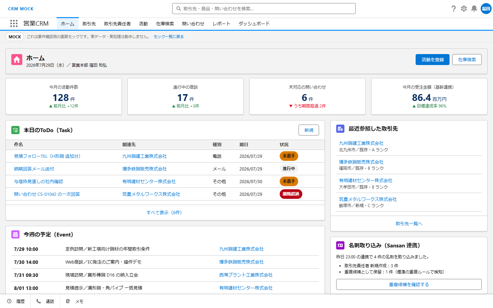
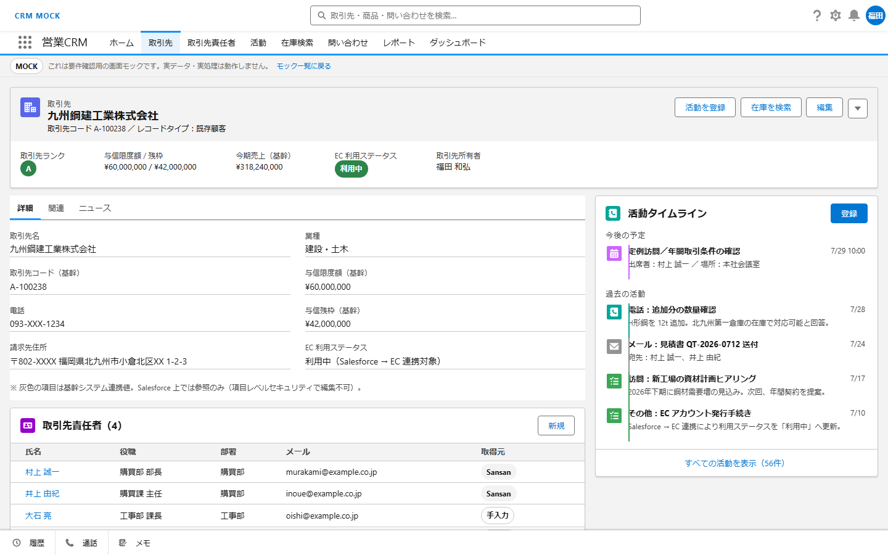
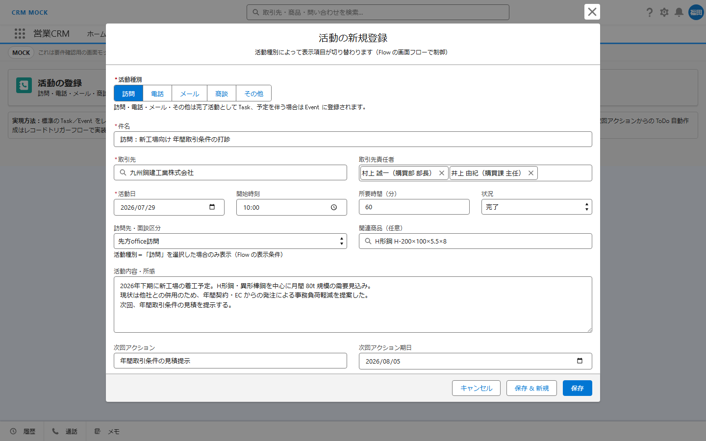
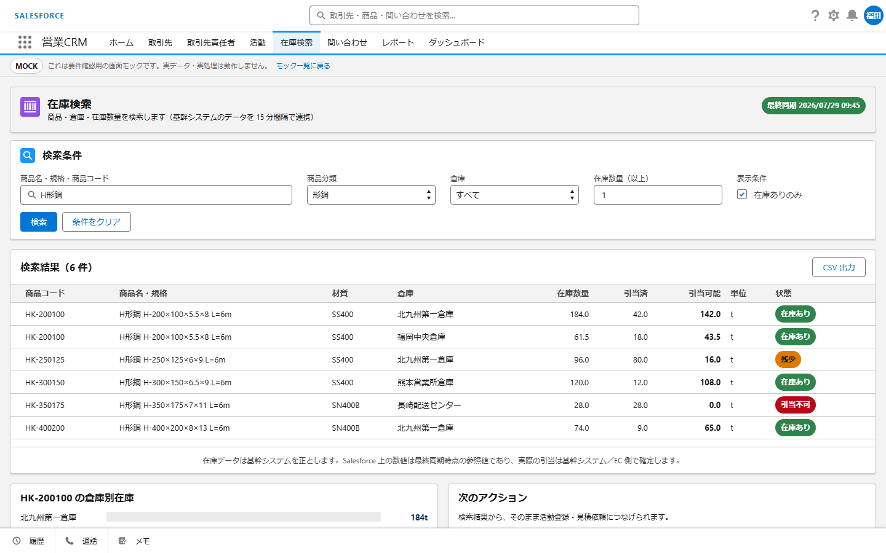
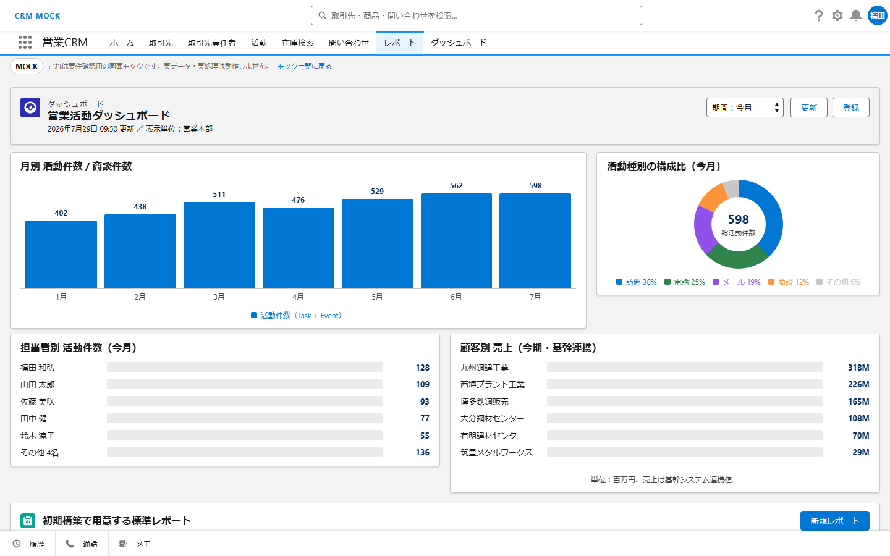
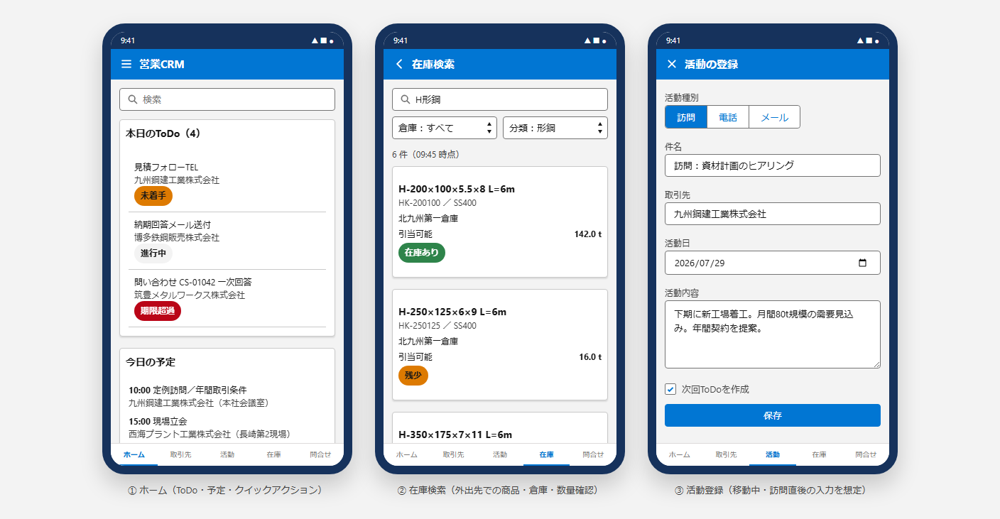

属人化した営業活動をSalesforceに集約し
基幹システム・ECサイト・名刺管理をつないで分析基盤まで整備
BtoB商社では、訪問・電話・見積り依頼といった営業活動の記録が担当者ごとの手帳やExcelに散在しがちです。在庫や受注のデータも基幹システム側にあり、営業現場からは参照しにくい状態でした。
営業活動をSalesforceの標準機能で一元管理し、基幹システム・ECサイト・名刺管理サービスからのデータを連携して集約。分析はレポート／ダッシュボードとTableauで行います。
訪問・電話・メール・商談・その他をレコードタイプで分類し、活動履歴を顧客単位で時系列に集約します。
基幹システムから連携した在庫データを商品・倉庫・数量で検索。営業が自分で在庫を確認できます。
基幹システム・ECサイト・Sansanを標準APIとMuleSoftで接続。Salesforce側は参照を主体とします。
標準レポート・ダッシュボードで日次の可視化を行い、詳細分析はTableauの標準コネクタで接続します。
Salesforce Mobile App の設定のみで、外出先から活動入力・顧客参照が可能になります。
活動種別に応じて入力項目を出し分け、次回ToDoを自動作成。入力の手間と記入漏れを減らします。
初期構築ではカスタム開発を極力避け、以下の優先順位で実現方式を選定しています。Apex / LWC は「標準機能で実現できない場合のみ」とし、現時点では不要と判断しました。
設定だけで実現できるものは標準機能で。バージョンアップの影響を受けにくく、引き継ぎも容易です。
画面フロー・レコードトリガーフローで入力制御や自動処理を実装。管理者が後から改修できます。
外部システムとの接続は標準APIと連携基盤で。個別のバッチ実装を持ち込みません。
上記で実現できない要件に限り採用。現時点の要件では使用しない方針です。
要件を洗い出したうえで、それぞれをどの機能で実現するかを整理しています。カスタム開発が必要な項目は現時点でありません。
| 要件 | 実現方法 |
|---|---|
| 営業活動管理（訪問・電話・メール・商談・その他） | 標準機能（Task / Event ＋ レコードタイプ） |
| 活動入力の項目出し分け・次回ToDo自動作成 | Flow（画面フロー＋レコードトリガーフロー） |
| 在庫検索（商品・倉庫・在庫数量） | 連携用カスタムオブジェクト ＋ Flow（画面フロー） |
| 営業分析 | 標準レポート・ダッシュボード |
| グローバル検索・モバイル対応 | 標準機能（Salesforce Mobile App の設定） |
| 基幹 / Sansan / EC 連携 | 標準API・MuleSoft（Salesforce 側は参照主体） |
| Tableau 連携 | Tableau の Salesforce コネクタ（標準） |
| Apex / LWC | 現時点で不要 |
要件の認識合わせを早めるため、Salesforce Lightning Design System をベースにした操作できるHTMLモックを先に作成しました。タブ移動・一覧から詳細への遷移・活動入力モーダル・種別による項目の出し分けまで、実際に押して確認できます。
画像をクリックすると拡大表示されます。






※ モック内の企業名・担当者名・商品コード・数値はすべて架空のサンプルデータです。SLDS をローカルに同梱しているため、インターネット接続なしで動作します。ヘッダーのロゴは実在企業の商標を素材として使用しない方針から、テキスト表記としています。
画面イメージで合意を取ってから設計ドキュメントに着手することで、手戻りを抑えます。
※ 現在はSTEP 3（UIモック）まで完了し、STEP 4の設計ドキュメント一式に着手する段階です。
ツールを入れて終わりにせず、現場が使い続けられる形に落とし込みます。
既存システムとの連携・分析基盤までまとめてご相談ください。